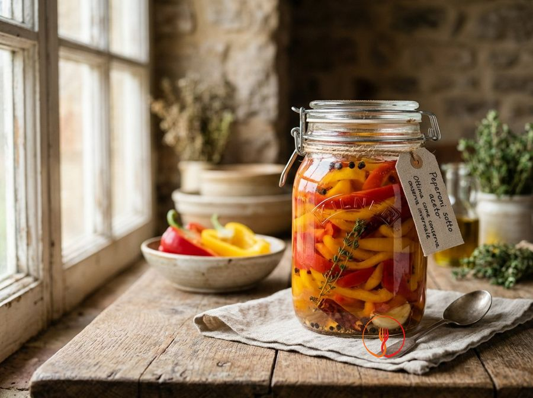

Peperoni sotto aceto
Ottima come conserva invernale
Ingredienti
- Olio1/2 lt.
- Aceto1/2 lt.
- Zucchero500 gr.
- Peperoni gialli500 gr.
- Peperoni rossi500 gr.
Allergeni
Solfiti
Procedimento
- Tagliare i peperoni a striscioline
- In una casseruola versare olio, aceto e zucchero e portare ad ebollizione
- Aggiungere I peperoni e fare bollire per qualche minuto
- Versare nei barattoli e metterli sottosopra per creare il sottovuoto.
Valori nutrizionali (stima)
| Per porzione (1232 g) | Per 100 g | |
|---|---|---|
| Energia | 13393 kJ / 3201 kcal | 1088 kJ / 260 kcal |
| Proteine | 5.0 g | 0.4 g |
| Carboidrati | 280 g | 23 g |
| di cui zuccheri | 271 g | 22 g |
| Grassi | 232 g | 19 g |
| di cui saturi | 32 g | 2.6 g |
| Fibre | 10 g | 0.9 g |
| Sale | 0.0 g | 0.0 g |
Valori stimati con l'AI su dati medi CREA / USDA: sono indicativi e non sostituiscono il parere di un medico o di un nutrizionista.
Apri la ricetta nell'app per la lista della spesa, le schede ingredienti e i negozi vicini.